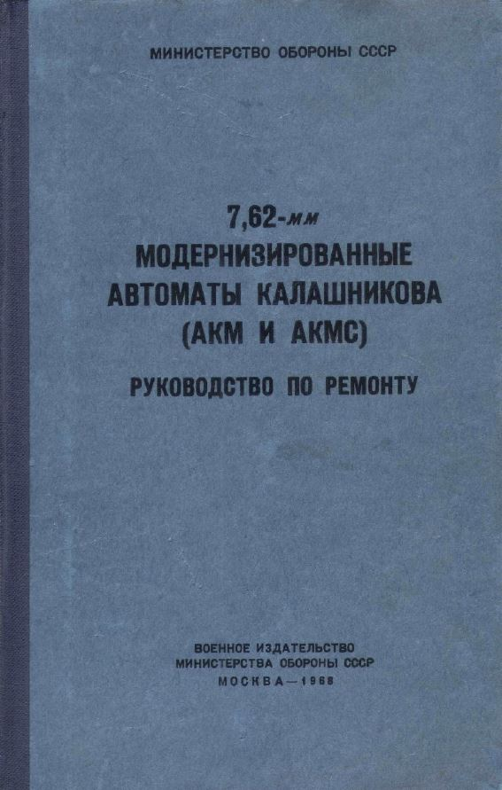

At the moment, I'm working through Udacity's AI for Trading nanodegree program. I'm really enjoying it at the moment, and I'm learning a lot of methods for analyzing stocks that I'm looking forward to integrating into my portfolio. Here's an example from the most recent project I completed for this course. This graph shows the jaccard similarity on a bag of words generated from Amazon 10-K filings. After computing TFIDF vectors, cosine similarity, converting the data to a Pandas dataframe and then to Alphalens format, calculating factor returns and doing turnover analysis, the sharpe ratio of each alpha factor generated was calculated. "Litigious" had the largest sharpe ratio at 1.5. I plan to publish the code for all of my projects on Github when I finish the course. Additionally, I played around with translating images in Python using Tesseract OCR and Google Translate's python library. Here's the translation of a cover of an old Russian armorer's manual for the AK-47:  You can see that there is one error in Tesseract's conversion of letters on the cover to text (СССР was detected as СФСР), but the overall meaning of the cover remains unchanged. Fortunately, СФСР is SFSR in English, which is the acronym for the Soviet Federated Socialist Republic, another word for Soviet Russia.